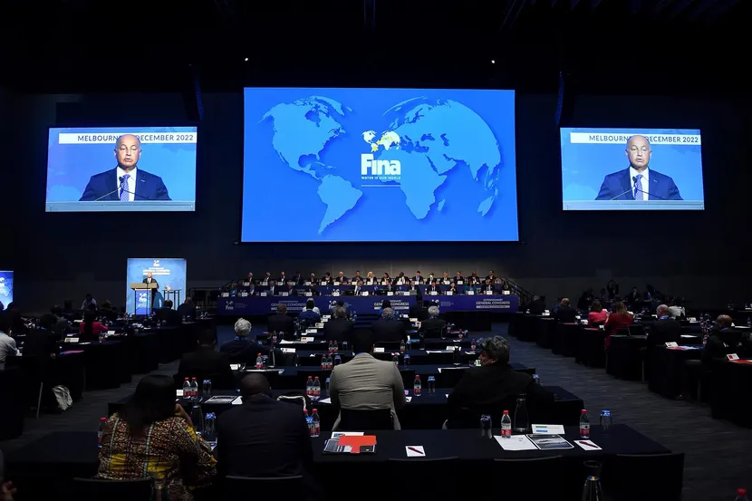

Ana sayfa
Takvim
Yarışmalar
Etkinlikler
Geçmiş
Haberler
Videolar
Sonuçlar
Tüm Sonuçlar
Sporcular
Daha Fazla
Hakkımızda
Geçmiş
Sponsorlar
Sporcu Başvuru

World Aquatics güncellemeleri ve Paris 2024 Kuralları ve Elemeleri ile ilgili açıklama.
İlk kez erkekler, Paris 2024 Olimpiyat Oyunlarında Artistik Yüzme dalında yarışmaya hak kazandı.
World Aquatics, Olağanüstü Genel Kongrenin ardından yeni Büroyu onayladı.
Rekor kıran FINA Dünya Yüzme Şampiyonası (25 m), su sporlarında yeni bir çağın başlamasına yardımcı oluyor.
Melbourne'dan Dört Hatıra: Devam eden geri dönüşlerden atılımlara.
Bir Şampiyonla Check-in | Japonya'nın ünlü yüzme sporcusu Rie Kaneto, yüzmeyi öğrenme etkinlikleri düzenliyor.
Fukuoka'ya gitmek için 200 gün | Rikuto Tamai ile Dünya Su Sporları Şampiyonasında dalış hakkında konuşmak.
Kyle Chalmers şimdiye kadarki en hızlı yarıları ayırdı, Maggie Mac Neil dünya rekorunu kırarak Melbourne'daki Dünya Kısa Kulvar Şampiyonası'nı tamamladı.